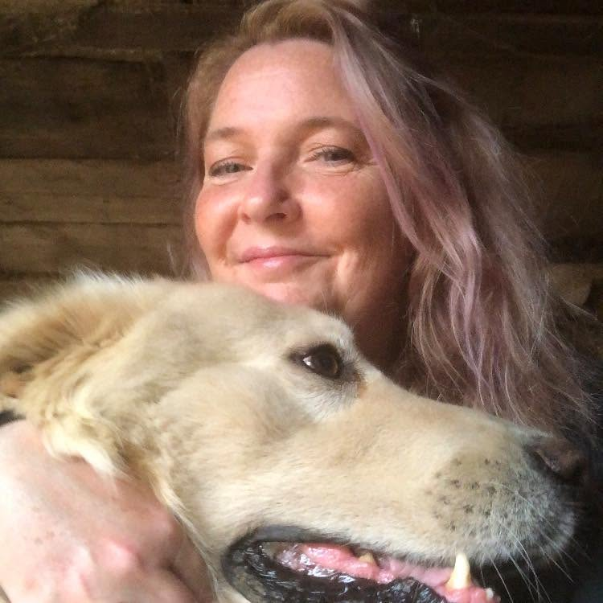

About Steiner Artisan Farm
Steiner Artisan Farm is associated with Lisa Steiner in Walnutport, Pennsylvania. This independent page brings together photographs of Lisa and the farm, along with a personal account submitted by the site owner.
This is not the farm's official website and is not affiliated with or endorsed by Lisa Steiner.
A word of caution
Personal lending experience
I provided a $5,500 personal loan to Lisa Steiner to help prevent foreclosure, with the understanding that the property would be sold and the loan repaid. With compounding interest, I calculate the outstanding balance to be $10,500. In my experience, the agreed repayment terms were not met. Based on this experience, I would not lend money to or enter another business arrangement with her. I encourage anyone considering a private loan to seek independent advice and document the terms in writing.
The home I helped save from foreclosure was subsequently foreclosed on and sold at a Sheriff's Sale. See Northampton County case C-48-CV-2022-01459 (foreclosure and Sheriff's Sale). An ejectment (eviction) action was later filed against Lisa Steiner in case C-48-CV-2026-09193 (ejectment proceedings).